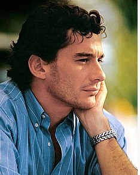

Apresentação
Ayrton Senna da Silva foi piloto de Fórmula 1, empresário e filantropo brasileiro. Senna foi campeão da categoria de piloto três vezes, em 1988, 1990 e 1991.
Informações Pessoais

- Nome: Ayrton Senna da Silva
- Apelido: Beco, O Chefe, O Rei de Mônaco, Magic Senna e Rei da Chuva
- Nacionalidade: Brasileiro
- Nascimento: 21 de março de 1960. São Paulo, SP - Brasil
- Morte: 1 de maio de 1994 (34 anos), Bolonha, Emília-Romanha, Itália
- Causa da moste: Acidente automobilístico
Carreira
Começou sua carreira competindo no kart em 1973 e em "carros de fórmula" em 1981, quando venceu as Fórmulas Ford 1600 e 2000. Em 1983 alcançou o título de campeão do Campeonato Britânico de Fórmula 3 batendo vários recordes. Seu desempenho impulsionou sua ascensão à Fórmula 1, fazendo sua primeira aparição na categoria no Grande Prêmio do Brasil de 1984 pela equipe Toleman-Hart. Em sua primeira temporada, Senna pontuou em cinco corridas, fechando o ano com treze pontos e a nona posição na classificação geral dos pilotos. No ano seguinte, ingressou na Lotus-Renault, pela qual venceu seis grandes prêmios ao longo de três temporadas. Em 1988, juntou-se ao francês Alain Prost na McLaren-Honda, com o qual teve grande rivalidade. Senna venceu oito etapas daquela temporada e sagrou-se campeão mundial pela primeira vez. Após a polêmica final de 1989 com Prost que resultou na segunda colocação do torneio, ele retomou o título em 1990, vencendo novamente na temporada seguinte, tornando-se o piloto mais jovem a conquistar um tricampeonato na Fórmula 1 até então. Em 1993, Senna foi vice-campeão, vencendo cinco corridas. Transferiu-se para a Williams em 1994, onde disputou apenas três etapas, a última sendo o Grande Prêmio de San Marino, onde se acidentou e morreu, no Circuito de Ímola. Ao todo, Senna participou de 161 grandes prêmios na Fórmula 1, alcançando 41 vitórias, 80 pódios, 65 pole positions e 19 voltas mais rápidas.
Principais conquistas
| Ano | Equipe | Pontuação | Posição |
|---|---|---|---|
| 1994 | Rothmans Williams Renault | 0 | 38º |
| 1993 | Marlboro McLaren International | 73 | 2º |
| 1992 | Honda Marlboro Mclaren | 50 | 4º |
| 1991 | Honda Marlboro Mclaren | 96 | 1º |
| 1990 | Honda Marlboro Mclaren | 78 | 1º |
| 1989 | Honda Marlboro Mclaren | 60 | 2º |
| 1988 | Honda Marlboro Mclaren | 90 | 1º |
| 1987 | Camel Team Lotus Honda | 57 | 3º |
| 1986 | John Player Special Team Lotus | 55 | 4º |
| 1985 | John Player Special Team Lotus | 38 | 4º |
| 1984 | Toleman Group Motorsport | 13 | 9º |
Condecorações
- Grau de Grã-Cruz da Ordem do Mérito Judiciário do Trabalho em uma homenagem póstuma de agosto de 1994.
- Ordem Nacional do Mérito - Grau de Grã-Cruz (Póstuma) em 1994.
- Ordem do Ipiranga no grau de Grão-Cruz em uma homenagem póstuma de 1994.
- Medalha da Ordem do Mérito Aeronáutico - Grau de Cavaleiro - 1993.
- Comenda da Ordem de Rio Branco da Presidência da República em 14 de fevereiro de 1992.
- Título de cidadão honorário do Rio de Janeiro concedido pela Assembleia Legislativa do Rio de Janeiro em 1991.
- Medalha da Ordem do Mérito Esportivo do CND em março de 1990.
- Título de Jaguar da Força Aérea Brasileira - 1988.
- Título de Benemérito do Estado do Rio de Janeiro - 1988.
- Medalha do Mérito Santos-Dumont - 1987.
Referencia Wikipédia 30/05/2024